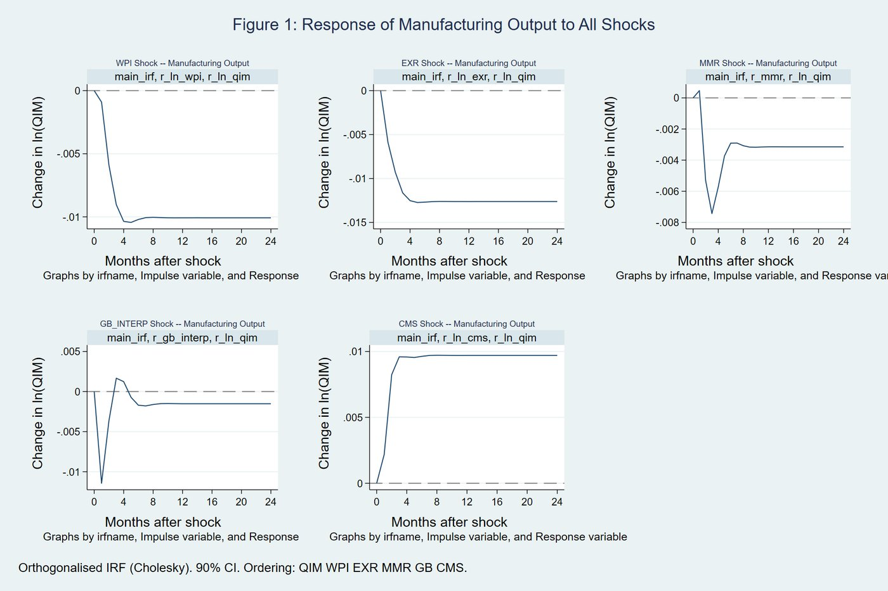

Pakistan’s manufacturing sector faces a fundamental policy dilemma: the State Bank of Pakistan relies on the policy rate as its principal anti-inflation instrument, yet the sector’s acute import dependence makes exchange rate movements a potentially dominant source of output volatility. This paper estimates a structural break-adjusted, six-variable Vector Error Correction Model over 186 monthly observations from January 2006 to June 2021 to rank three transmission channels simultaneously.
Exchange rate shocks explain 27.5% of manufacturing output forecast error variance at a 24-month horizon, against 1.5% attributable to direct interest rate shocks - an 18:1 ratio, invariant to alternative Cholesky orderings. The long-run exchange rate pass-through elasticity is 6.63, roughly 12.7 times the interest rate’s long-run effect on prices. A pre-2018 subsample reveals a structural reversal: before Pakistan’s IMF programme and currency crisis, the bank credit channel accounted for 50.7% of output variance, while the exchange rate channel contributed only 4.5%. Exchange rate stability, not interest rate management alone, is the binding constraint on industrial production in Pakistan.
Which channel dominates the transmission of monetary policy to Pakistan’s manufacturing output - the interest rate, the exchange rate, or credit - and does that ranking change once structural breaks in the data are properly accounted for?
Pakistan’s manufacturing sector operates under acute dependence on imported inputs, while the central bank leans on the policy rate as its principal instrument. If the interest rate is a weak lever and the exchange rate is the true transmission channel, then relying on rate hikes alone to control inflation imposes collateral costs on industrial output without addressing the actual source of price pressure.
186 monthly observations, January 2006 to June 2021. Six endogenous variables: manufacturing output (QIM), the Wholesale Price Index (WPI), the exchange rate (EXR), the money market rate (MMR), the government bond rate (GB), and credit to the private sector (CMS). Output, prices, the exchange rate, and credit are log-transformed; interest rate variables are retained in percentage-point form.
Structural breaks are identified using the Clemente–Montañés–Reyes procedure, with controls added for the Global Financial Crisis, policy shifts, COVID-19, and seasonality. A Frisch–Waugh–Lovell pre-filtering step residualizes each series against these deterministic controls before the dynamic system is estimated. Structural-break-adjusted unit root tests establish integration order, the Johansen framework identifies two long-run cointegrating relationships, and a Vector Error Correction Model jointly estimates short-run dynamics and long-run adjustment.
Transmission is identified using orthogonalized impulse response functions under a recursive Cholesky ordering (output → prices → exchange rate → money market rate → bond rate → credit), complemented by forecast error variance decomposition. The model passes a full diagnostic battery: residual serial correlation, normality, eigenvalue stability, weak exogeneity, and CUSUM parameter stability tests.
Two cointegrating equations are identified, each significant at the 1% level. In the output equation, the exchange rate is the only significant long-run determinant: a 1% depreciation is associated with a 0.956% fall in long-run manufacturing output. The interest rate has no significant direct long-run effect on output.
In the price equation, three coefficients are significant. Exchange rate pass-through to prices is 6.63: a 1% depreciation raises long-run wholesale prices by 6.63%. The money market rate carries a positive long-run coefficient of 0.522, consistent with a working-capital cost-push channel, where higher borrowing costs raise producer prices before demand compression can operate. The government bond yield carries a coefficient of −0.527, consistent with a crowding-out effect on private credit.
A pre-2018 subsample shows a markedly different ranking: the bank credit channel explained 50.7% of output variance, while the exchange rate channel contributed just 4.5%. The transition to a more market-determined exchange rate regime after 2018 reversed this, elevating the exchange rate channel to dominance.
Manufacturing output corrects toward long-run equilibrium at roughly 49% per month. The money market rate itself adjusts to the price equation, consistent with an implicit Taylor rule embedded in the data. Formal tests confirm that wholesale prices, credit, and the bond rate are weakly exogenous, meaning they do not adjust to correct disequilibria; only output and the policy rate do.

Under refereeing at the Journal of Policy Modeling.
← Back to research